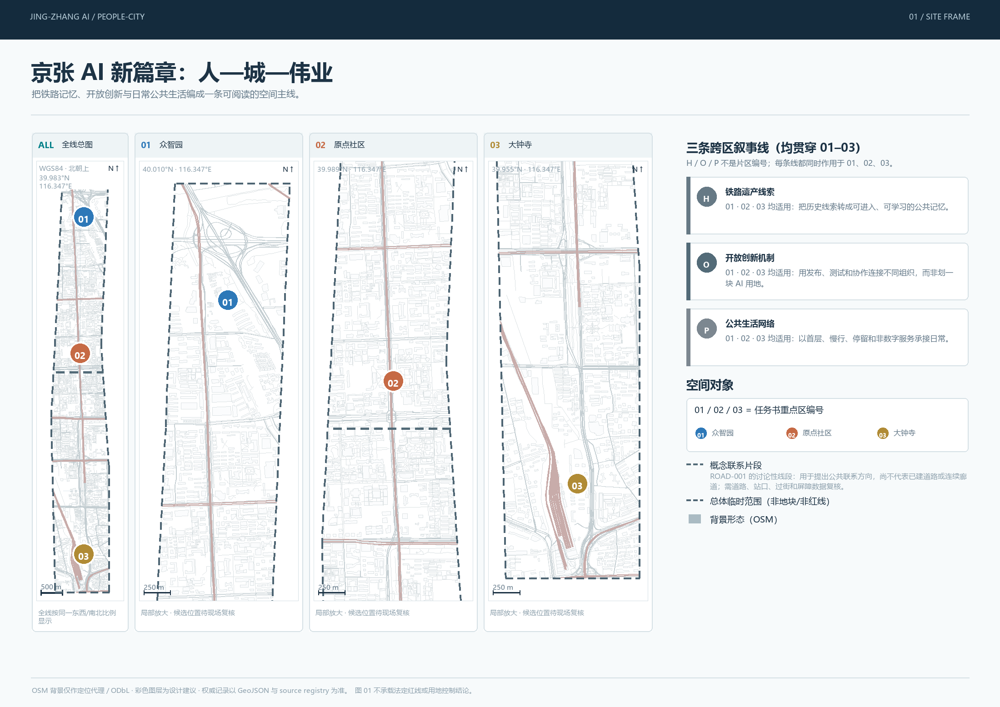
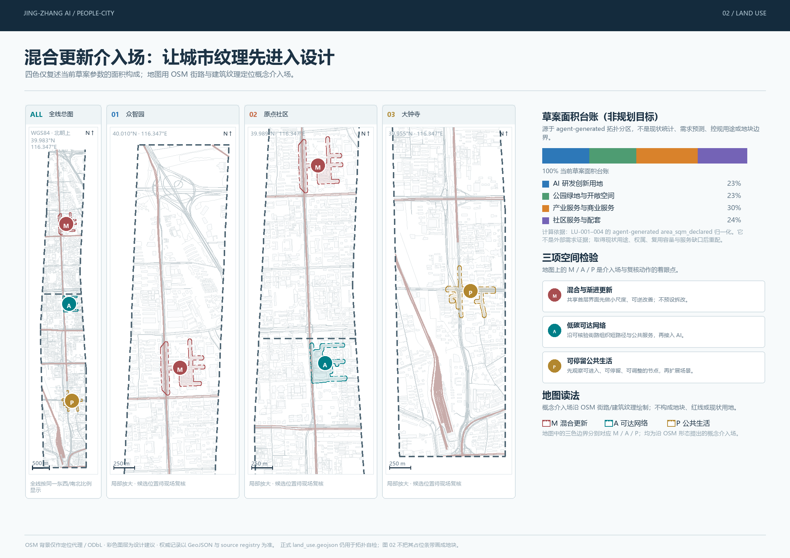
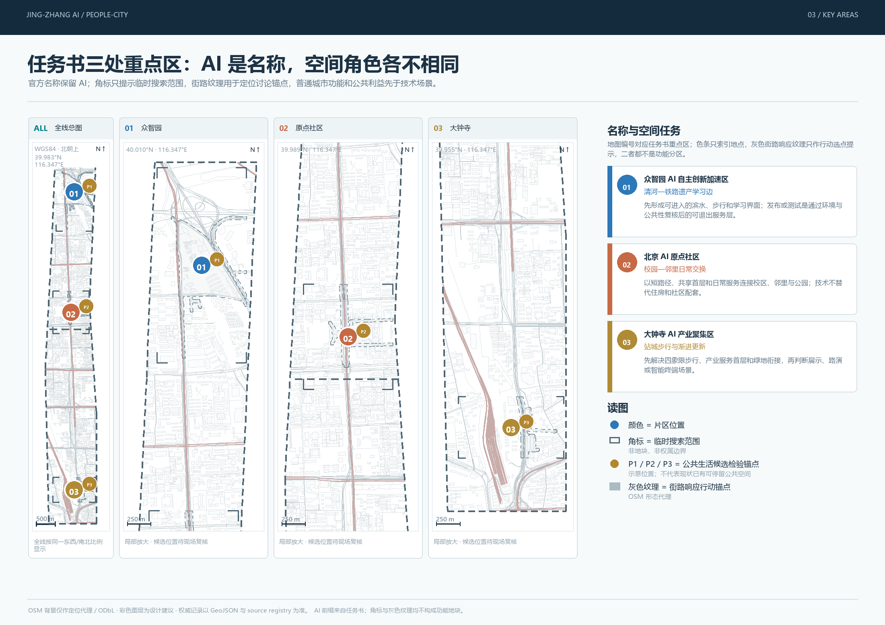
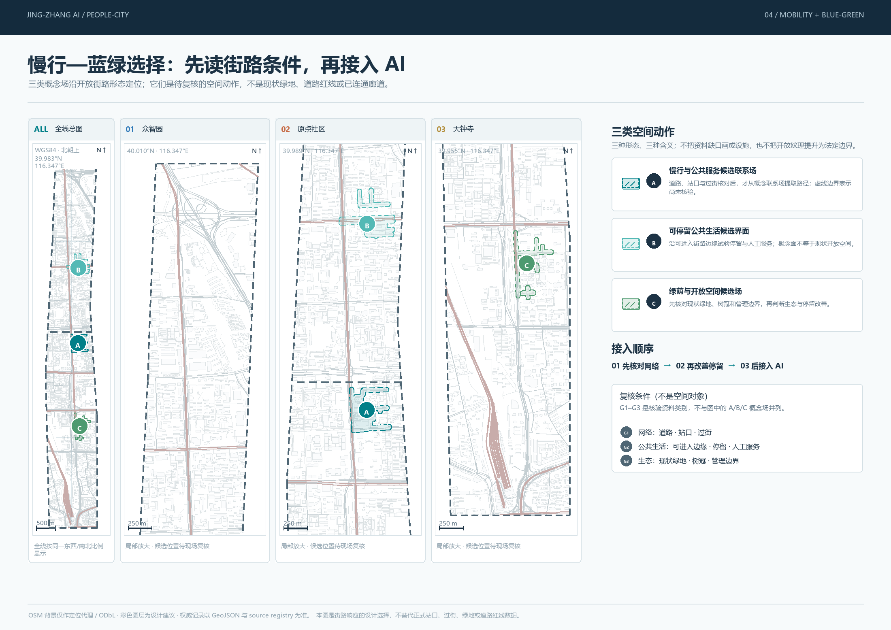
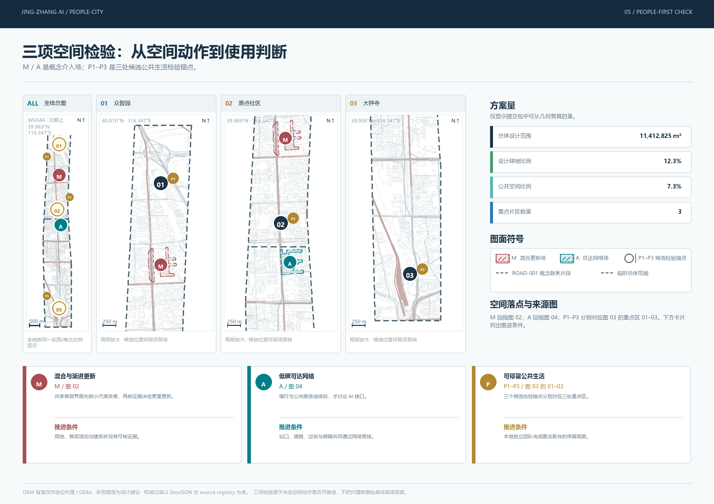

01 / 02 / 03
只表示任务书三处重点区编号。图 01 的 H/O/P 是跨区叙事线，属于另一套标记。
百年京张 AI 创新带 / 城市设计提案
以一条公共生活主轴，连接铁路遗产、创新协作与日常城市服务。AI 只在空间、可达性与人工服务条件清晰时进入公共试验。
本版不再把片区、走廊、边界、用地和证据状态共用一套颜色。空间对象以固定的线型、填色和编号表达；人本检验以“设计动作、空间落点、复核条件”的阅读顺序表达。五张图各有唯一任务，合在一起才构成完整方案。
每张图使用独立图例。颜色、字母和编号只在该图说明的范围内生效，不跨图自动继承含义。
只表示任务书三处重点区编号。图 01 的 H/O/P 是跨区叙事线，属于另一套标记。
四色仅用于草案面积台账，不表示重点区、走廊、现状用途或证据状态。
A/B/C 只属于图 04 的概念场；M/A/P 只属于三项人本空间检验，二者不混用。
灰色虚线只表示临时约束范围。它被有意降级显示，避免被误读为官方控制线。
请按 01 至 05 的顺序阅读：定位、结构、重点、慢行、准入。每张图均包含专属图例、来源说明与临时边界状态。


area_sqm_declared 脚手架面积归一化后的构成，不是需求判断、实施优先级、规划目标或现状用地；M/A/P 介入场沿 OSM 纹理定位，不是正式地块或道路红线。


混合与渐进更新、低碳可达网络、可停留公共生活共同决定一个 AI 场景能否进入公共空间。
01 设计动作 → 图 02
空间落点：研发、开放空间、产业服务与社区配套在共享首层界面相遇；先修补、再复用、后判断增建或重建。
复核焦点：不同使用者、时段和首层活动是否都能进入。
02 设计动作 → 图 04
空间落点：以步行、骑行、换乘与跨越断点组织京张公共生活主轴，AI 导览只能服务于已被确认的安全路径。
复核焦点：站口、过街、障碍和临时封闭信息是否足以支持连续到达。
P1/P2/P3 候选锚点 → 图 03
空间落点：P1/P2/P3 分别配对三个重点区，作为未来核验走、停、坐、交谈和人工服务条件的候选锚点；它们并非已有合格公共空间。
复核焦点：无障碍、停留条件、人工服务和非数字替代是否真正可用。
下列数字仅复算自本次提交的概念几何，不被解释为官方控制指标或现状调查结论。
空间方案、数据与人工判断不是并列物。它们依次回答“做什么、在哪里做、何时可以开放”。
在图 01 至 04 中分别确认重点区编号、概念介入场、候选检验锚点和临时范围的关系。
每个 AI 场景须写明谁使用、由谁解释、无 App 或自动服务失效时如何继续提供服务。
仅在可达性、公共生活、数据边界和暂停条件可被专业人员复核时，才进入有限、可退出的试验。
方案以三层范围、三处重点区域、总体空间结构、交通慢行、蓝绿公共空间、AI 场景和实施边界覆盖任务书要求。提交包的确定性、空间、视觉与专业证据检查记录在 self_check.json。
来源包括公告、任务书、已登记标准、提交 GeoJSON 与 OSM/ODbL 研究背景。官方边界、控制条件、可通行网络、站口、过街、建筑首层使用与现场观察仍需在下一阶段核实；所有图面保留这一假设边界。